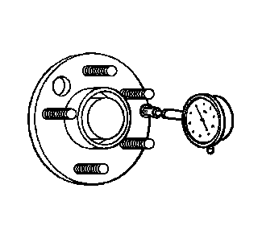
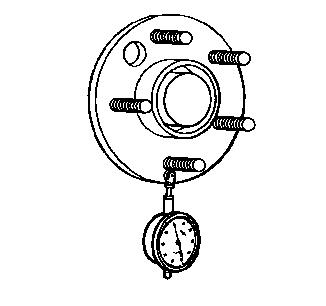

轮毂/车桥法兰和车轮双头螺栓跳动量的检查
专用工具
GE-8001
千分表组件
关于当地同等工具，参见
专用工具和设备
。
1.
举升并顶起车辆。参见
举升和顶起车辆
。
2.
标记车轮相对车轮双头螺栓的位置，并且在每个轮胎和车轮上标记具体车辆位置—左前、左后、右前和右后。
3.
从车辆上拆下轮胎和车轮总成。参见
轮胎和车轮的拆卸和安装
。
4.
将制动盘和/或制动鼓从车辆上拆下。清除制动盘、制动鼓（如装备）和轮毂/车桥法兰装配面上的任何碎屑、锈斑和腐蚀。

5.
将
GE-8001
千分表组件
或同等工具放置在车轮双头螺栓外的轮毂/车桥法兰的机加工表面上。
6.
缓慢地旋转轮毂一整圈，找到跳动低点。
7.
将
GE-8001
千分表组件
或同等工具在跳动低点时归零。
8.
缓慢地旋转轮毂一圈以上，测量总的轮毂/车桥法兰跳动量。
规格
轮毂/车桥法兰跳动量公差指南：0.132/毫米（0.005/英寸）
9.
如果轮毂/车桥法兰跳动量在规格范围内且车辆装有车轮双头螺栓，转至步骤13。
10.
如果轮毂/车桥法兰跳动量在规格范围内且车辆装有车轮螺栓，转至步骤19。
11.
如果轮毂/车桥法兰跳动量为临界值，轮毂可能是，也可能不是扰动源。
12.
如果轮毂/车桥法兰跳动量过大，则更换轮毂/车桥法兰。测量新轮毂/车桥法兰的跳动量。

13.
放置
GE-8001
千分表组件
或同等工具，使其接触到车轮安装双头螺栓。
尽可能在靠近法兰的位置测量双头螺栓的跳动量。
14.
旋转轮毂一整圈，以在每个车轮双头螺栓上作好标记。
15.
在最低位置的双头螺栓上，将
GE-8001
千分表组件
或同等工具归零。
16.
缓慢地旋转轮毂一整圈，测量车轮双头螺栓（双头螺栓圆周）总的跳动量。
规格
车轮双头螺栓跳动量公差指南：0.254毫米（0.010英寸）
17.
如果车轮双头螺栓（双头螺栓圆周）的跳动量为临界值，车轮双头螺栓可能是，也可能不是扰动源。
18.
如果车轮双头螺栓（双头螺栓圆周）的跳动量过大，视情况更换车轮双头螺栓。测量新的车轮双头螺栓的跳动量。
19.
检查每一个车轮螺栓的螺纹和锥型座部分是否损坏。
20.
螺纹和/或锥形座损坏的车轮螺栓必需更换。
21.
将每个车轮螺栓的螺纹部分沿着直尺放置，以检查其平直度。
22.
不直的车轮螺栓必需更换。